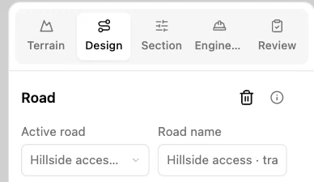
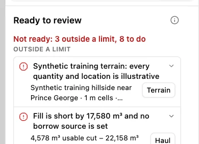
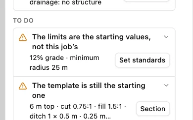
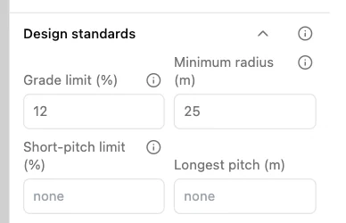

Review design checks
Use the unedited Hillside access training project in Engineering workbench. This walkthrough follows the design standards check. Your own road may have different outstanding items.
1. Open Review
Select Review in the workflow tabs. The list reflects the selected project and road.

2. Read the findings
Under Ready to review, the example reports 3 outside a limit and 8 to do. Read the explanation under each finding. One flags synthetic terrain, and another identifies fill with no borrow source set.

3. Follow a check to its setting
Under To do, find the item about starting values for the design limits and select Set standards. The workbench opens Design standards.

4. Inspect the design limits
Find Grade limit (%) and Minimum radius (m). For a real project, review these values against the job requirements before confirming the standards. You can leave the training settings as they are.
